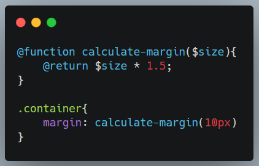
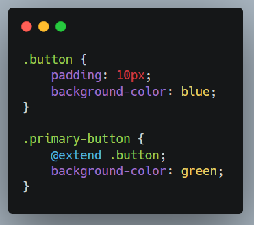
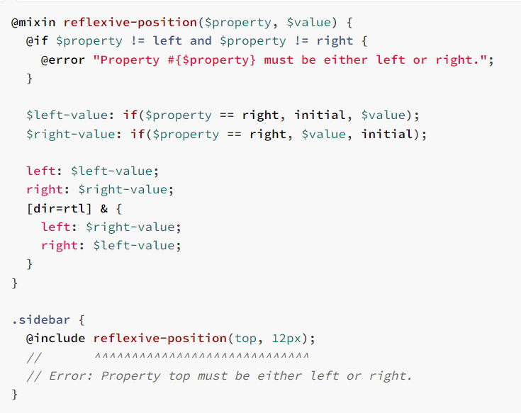
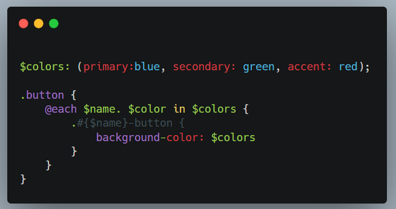

SASS
SASS nima ?
- Sass (Syntactically Awesome Style Sheets) - bu CSS uchun preprocesser bo'lib, u CSS yozishni osonlashtiradi va kuchliroq qiladi. Sass dastlab ishlab chiqarilgan CSS sintaksisini kengaytirish uchun ishlatiladi va qo'shimcha xususiyatlar, sintaksis qisqartmalari, va qayta foydalanish imkoniyatlarini taqdim etadi.
- Chiqish sanasi: 2006-yil
-
Sintaksis:
- Sass: Indentsiya asosida, CSS'ga o'xshash bo'lmagan sintaksis.
- SCSS: CSS'ga o'xshash sintaksis, CSS kodini o'z ichiga oladi va Sass funksiyalarini qo'llab-quvvatlaydi. - Asosiy Xususiyatlar: O'zgaruvchilar, mixins, nesting, meros, matematik amallar, modullar (partials).
SASS vs SCSS
- Sass (Indentation Syntax)
- Sintaksis: Sass o'zining o'ziga xos sintaksisiga ega bo'lib, unda qavslar ({}) va nuqta-vergul (;) ishlatilmaydi. Buning o'rniga, u Python kabi ichki ko'rinishni belgilash uchun indentatsiya (bo'sh joy yoki tab) ishlatadi.
- Chidamlilik: Sass sintaksisi CSS-dan ancha qisqa va o'qish osonroq bo'lishi mumkin, chunki ortiqcha belgilashlardan qochadi.
- Fayl kengaytmasi: Sass sintaksisidagi fayllar .sass kengaytmasi bilan tugaydi.
SCSS (Sassy CSS)
- Sintaksis: SCSS odatiy CSS bilan to‘liq mos keladigan sintaksisga ega. U qavslar ({}), nuqta-vergullar (;), va boshqa CSS qoidalarini o'z ichiga oladi, lekin Sass imkoniyatlarini kengaytirish va kuchaytirish uchun ishlatiladi.
- Oson o‘tish: CSS-dan SCSS-ga o'tish juda oson, chunki SCSS odatdagi CSS qoidalarini qabul qiladi. Bu SCSS-ni CSS biladigan, lekin Sass o'rganmoqchi bo'lganlar uchun afzal qiladi.
- Fayl kengaytmasi: SCSS sintaksisidagi fayllar .scss kengaytmasi bilan tugaydi.
- Muammo: #216
7-1 pattern
- base/ : Loyihaning asosiy (fundamental) qismlari, global CSS kodlari shu yerda joylashadi. Bu joyda reset, typography, fonts, variables kabi fayllar bo'lishi mumkin.
- components/ : Loyihaning kichik, qayta ishlatiladigan komponentlari. Masalan, buttons, cards, dropdowns kabi elementlar.
- layout/ : Loyiha tuzilmasini boshqaradigan fayllar. Masalan, header, footer, grid, navigation kabi strukturalar bu yerda joylashadi.
- pages/ : Alohida sahifalar uchun stil qoidalari. Masalan, home, about, contact kabi sahifalarga xos stylinglar bu yerda bo'lishi mumkin.
- themes/ : Agar loyiha bir nechta rangli mavzularni (themes) qo'llab-quvvatlasa, ularni shu yerda boshqarish mumkin.
- abstracts/ : Bu yerda mixin, function, variables kabi utilitlar bo'ladi. Bu papka ba'zan helpers yoki utils deb ham ataladi.
- vendors/ : Uchinchi tomon kutubxonalari yoki frameworklar uchun stil kodlari. Masalan, bootstrap, jquery-ui kabi CSS kutubxonalari.
- main.scss : Bu fayl loyihaning barcha fayllarini bir joyda jamlaydi (@import orqali). Bu fayl odatda asosiy stil fayli bo'lib, loyiha oxirida ishlab chiqarish uchun kompilyatsiya qilinadi.

@import
- Sass-da @import CSS-dagi @import dan farq qiladi. Sass-da u boshqa Sass fayllarini bitta asosiy faylga birlashtirish uchun ishlatiladi.
-
@import 'variables';
@import 'mixins';
@import 'base';
@use
- @use sizga fayllarni import qilish imkonini beradi, lekin ularning o'zgaruvchilari va mikslari global nom maydoniga qo'shilmaydi. Bu nom to'qnashuvlarining oldini olishga yordam beradi.
- Import qilingan fayllardagi o'zgaruvchilarni foydalanishda nom maydoni orqali murojaat qilasiz.
-
Sass jamoasi @import dan foydalanishni davom ettirmaydi . Sass keyingi bir necha yil
ichida uni
bosqichma-bosqich olib tashlaydi va oxir-oqibat uni tildan butunlay olib tashlaydi. Buning
o'rniga @use dan foydalanish kerak.
- Eng katta kamchiliklaridan biri @import barcha o'zgaruvchilar, miksinlar va funktsiyalarni global foydalanishga imkon beradi. Bu odamlarga biror narsa aniqlangan joyni aytishni juda qiyinlashtiradi .

@forward
- @forward orqali siz bir fayldan boshqa biriga o'zgaruvchilar, mikslari va funksiyalarni o'tkazishingiz mumkin. Bu fayllarni modul sifatida yaratishda foydali.

@mixin va @include
- @mixin bir necha marta foydalanilishi mumkin bo'lgan stil bloklarini yaratish imkonini beradi.
- @include esa bu stil bloklarini qo'shish uchun ishlatiladi.
@function
@function Sass ichida funksiya yaratishga imkon beradi, u biror qiymatni qaytaradi va shu qiymatdan keyingi stil yozuvlarida foydalaniladi.
@extend
@extend mavjud selektorning uslubini boshqa selektorga qo'shishga imkon beradi. Bu uslublarni qayta ishlatishni osonlashtiradi.
@error
@error Sass kompayl vaqtida xatolarni chiqarish uchun ishlatiladi. Bu uslubdagi mantiqiy xatolarni aniqlashda foydali.
@else if, @if
Sass-da @else if @if shartli operatorining qo'shimcha holati sifatida ishlatiladi. Siz @if shartini qo'shimcha shartlar bilan kengaytirishingiz mumkin.

@each
@each sizga ro'yxat yoki kartaga kiruvchi elementlar bo'yicha iteratsiya qilish imkonini beradi.
@for
@for ssizga indeks yoki raqam orqali iteratsiya qilish imkonini beradi. U ikki xil sintaksisni qo'llab-quvvatlaydi: from...to va from...through.

Bularni farqi from to oxirgi raqamni olmaydi

from throgh bo’lsa oxirgi raqamni oladi
&

BEM (Block Element Modifier)
BEM metodologiyasi CSS klasslarini aniq va samarali tashkil qilish uchun ishlatiladi. U CSS kodini modulli va qayta ishlatishga qulay qilishga yordam beradi.

OOCSS (Object-Oriented CSS)
- Tuzilishi: CSS ob'ektlarga asoslangan. Strukturaviy va tashqi ko'rinish uslublarini ajratib beradi.
-
Ma'lumotlar:
- Structural Styles: Ob'ektning strukturasi (`.grid`, `.container`). - Skin Styles: Ob'ektning ko'rinishi (`.color-primary`, `.border-thick`). - Foydalanuvchilar uchun: Kodni qayta ishlatish va ob'ektlar orqali boshqarish uchun mo'ljallangan. Qayta ishlatishni osonlashtiradi.
- Qo'llanilishi: Modular komponentlarni yaratishda va ularni qayta ishlatishda yaxshi

SMACSS (Scalable and Modular Architecture for CSS)
- Tuzilishi: CSS kodini toifalarga ajratadi: Base, Layout, Module, State, va Theme.
-
Ma'lumotlar:
- Base: Asosiy uslublar (`body`, `a`).
- Layout: Sahifaning umumiy tuzilishi (`.header`, `.footer`).
- Module: Mustaqil komponentlar (`.button`, `.form`).
- State: Elementning holati (`.is-active`, `.is-hidden`).
- Theme: Vizual uslublar (`.theme-dark`, `.theme-light`). - Foydalanuvchilar uchun: Har xil toifalarga ajratilgan kodni yaxshi tashkil etadi, ammo strukturani aniqlash va boshqarishda sizga yordam beradi.
- Qo'llanilishi: Dinamik va o'zgaruvchan saytlar uchun qulay.
ITCSS (Inverted Triangle CSS)
- Foydalanuvchilar uchun: Katta va murakkab loyihalar uchun foydalidir. CSS fayllarini darajalar bo'yicha ajratadi va ularni boshqarishni osonlashtiradi.
- Qo'llanilishi: Murakkab loyihalarda strukturani boshqarish va kengaytirish uchun yaxshi.
- 7-1 pattern kabi